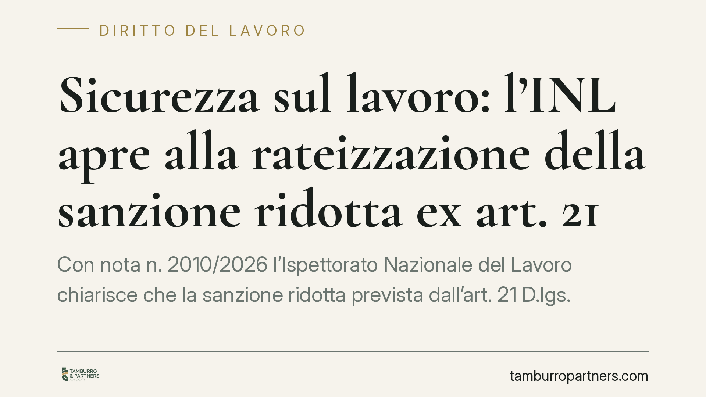

Sicurezza sul lavoro: l'INL apre alla rateizzazione della sanzione ridotta ex art. 21
Con nota n. 2010/2026 l'Ispettorato Nazionale del Lavoro chiarisce che la sanzione ridotta prevista dall'art. 21 D.lgs. 758/1994, dovuta dopo l'adempimento della prescrizione in materia di sicurezza sul lavoro, può essere rateizzata. Un'indicazione operativa che incide sull'estinzione delle contravvenzioni e sul rapporto tra datore di lavoro e organi di vigilanza.

Il chiarimento dell'INL
L'Ispettorato Nazionale del Lavoro, con la nota n. 2010/2026 del 25 settembre 2026, è intervenuto su un punto che genera incertezze applicative da tempo: la possibilità di dilazionare il pagamento della sanzione ridotta prevista dall'art. 21 del D.lgs. 758/1994.
La questione riguarda le contravvenzioni in materia di igiene, salute e sicurezza sul lavoro. Si tratta di reati per i quali il legislatore ha costruito un meccanismo particolare: prima di arrivare al processo penale, il datore di lavoro ha la possibilità di mettersi in regola e chiudere la vicenda con il pagamento di una somma ridotta.
Inquadramento normativo
Il D.lgs. 758/1994 disciplina, agli artt. 20 e seguenti, uno speciale procedimento di estinzione delle contravvenzioni antinfortunistiche. Il meccanismo è duplice.
Con l'art. 20, l'organo di vigilanza che accerta la violazione impartisce al contravventore una prescrizione: un ordine di regolarizzazione con un termine per l'adempimento. Se il datore di lavoro ottempera nei tempi, entra in gioco l'art. 21: entro trenta giorni dalla verifica dell'adempimento, egli è ammesso a pagare una sanzione amministrativa ridotta, pari a un quarto del massimo dell'ammenda prevista per la contravvenzione.
Il pagamento della somma ridotta, unito all'adempimento della prescrizione, determina l'estinzione del reato (art. 24). È un esito favorevole: la contravvenzione non arriva a sentenza e non produce conseguenze penali definitive.
Il nodo interpretativo era proprio questo: la norma parla di pagamento entro trenta giorni, ma nulla dice sulla possibilità di frazionarlo. Da qui l'incertezza degli operatori.
Cosa dice la nota: la rateizzazione è ammessa
L'INL chiarisce che il pagamento della sanzione ridotta ex art. 21 può essere rateizzato. La dilazione non pregiudica l'effetto estintivo, purché il piano di rateizzazione sia rispettato.
La ratio è coerente con l'impianto del D.lgs. 758/1994: lo strumento è pensato per incentivare la regolarizzazione effettiva delle condizioni di sicurezza, non per punire in via immediata. Consentire la dilazione favorisce l'adesione al meccanismo, soprattutto quando l'importo dell'ammenda ridotta è comunque significativo.
Resta fermo che il beneficio è subordinato al completamento dei versamenti. Il mancato o ritardato pagamento delle rate riapre la strada del procedimento penale, con la trasmissione degli atti all'autorità giudiziaria.
Implicazioni pratiche per il datore di lavoro
Per il datore di lavoro destinatario di una prescrizione, il chiarimento ha un valore concreto.
Primo: l'estinzione del reato non è più condizionata a un esborso unico e immediato. Questo amplia la platea di chi può accedere effettivamente al beneficio, in particolare le realtà di piccole dimensioni.
Secondo: l'attenzione si sposta sulla puntualità dei versamenti. Un piano di rateizzazione non rispettato non è un semplice ritardo amministrativo: fa venire meno l'effetto estintivo e riporta la contravvenzione sul binario penale.
Terzo: la scelta di rateizzare va valutata insieme alla verifica dell'adempimento della prescrizione. I due profili — regolarizzazione tecnica e pagamento — restano distinti ma convergono nell'unico obiettivo dell'estinzione.
Cosa fare in concreto
- Adempi alla prescrizione nei termini indicati dall'organo di vigilanza: senza regolarizzazione effettiva, la sanzione ridotta non è nemmeno applicabile.
- Documenta l'avvenuto adempimento e conserva ogni evidenza della messa in regola, in vista della verifica da parte dell'organo di vigilanza.
- Valuta la richiesta di rateizzazione confrontando l'importo dovuto con la liquidità disponibile, prima di impegnarti in un piano che dovrai rispettare integralmente.
- Rispetta rigorosamente le scadenze delle rate: il ritardo o l'omissione fanno decadere il beneficio e riaprono il procedimento penale.
- Fatti assistere nella gestione del procedimento, dal momento dell'accertamento fino al completamento dei pagamenti, per non compromettere l'effetto estintivo.
Osservazioni conclusive
La nota dell'INL non introduce una nuova disciplina, ma colma un vuoto interpretativo con un orientamento favorevole alla funzione riparatoria del D.lgs. 758/1994. Per le imprese è un'apertura utile, a condizione di gestire con rigore tempi e adempimenti. Il beneficio, infatti, resta condizionato al pieno rispetto degli obblighi assunti.
---
*Contributo informativo a cura di Tamburro & Partners - Avv. Giuseppe Tamburro. Non costituisce parere legale.*
Ogni storia di lavoro ha i suoi tempi.
Se gestisci HR e vuoi un confronto su contenzioso, ispezioni o licenziamenti, scrivi allo studio. Ti rispondiamo entro un giorno lavorativo.